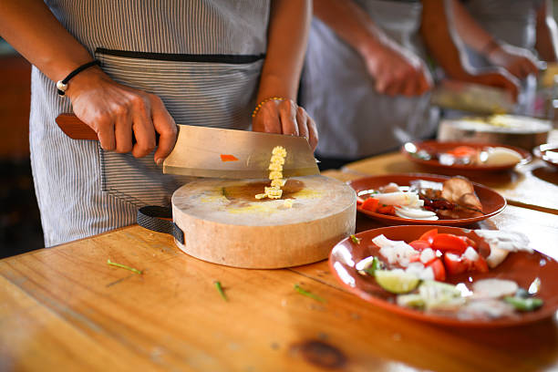

Super Minds High School
The Super Minds High School curriculum is liberal arts based; and that is, it assumes that students should have a general education drawn from broad academic areas, as well as specialized training in one major department, and that students should have the liberty within certain established guidelines and consultation with their faculty advisors, to select their own department.
Academic work is measured in terms of period hours. For a student to graduate, he/she must complete and pass a minimum avrage 70 The total number of period hours is subdivided among the general education requirements, the major,and electives or professional requirements for certification in specific areas of interest to the student. Specific requirements are listed with the department requirements. See catalog for additional information. There are Seven departments in our school School:
1. Department of Pure SCIENCES
2. Agriculture and Sustainable Development
3. The Department OF Home Economics & SOCIAL SCIENCES
4. Department of Accounting
5. THE Department of Natural Sciences
6. Department OF English
7. Department OF Christian Pranciple
8. INSTITUTE FOR PEACE AND CONFLICT RESOLUTION
Department of Pure SCIENCES
• Chemistry
• Physics
• Electrical (Certificate)
• Electronic and Technology Program (Certificate)
• Mathematics
• Plumbing (Certificate)
Agriculture and Sustainable Development
 • Animal Science and Health (Certificate)
• Animal Science and Health (Certificate)
• Plant & Soil Science (Certificate)
• Natural Resource Management (Certificate)
The Department OF Home Economics & SOCIAL SCIENCES
•Cooking

•Loungry
• House Chores
• Living Room Setting
• Bed Room setup
Department of Accounting
• Economics
• Money Infliction
• Cashier
• Foreign Exchange
THE Department of Natural Science
• Biology
• Environmental science
• Hygine
Department OF English
Basis Phonics
• Language Arts
• Compossition
Department of Secondary Education
• English Education

• History Education
• Peace Education
• Sociology Education